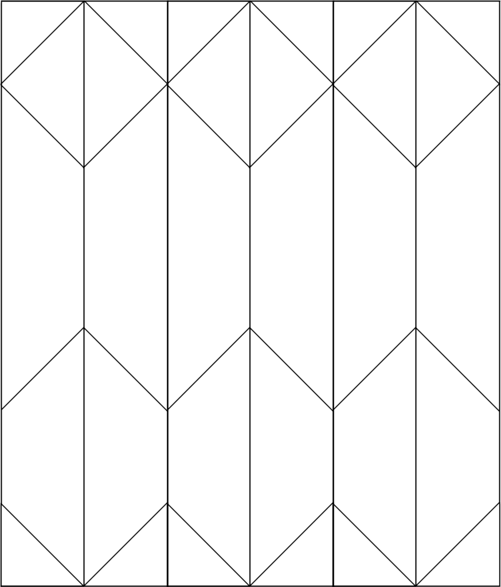
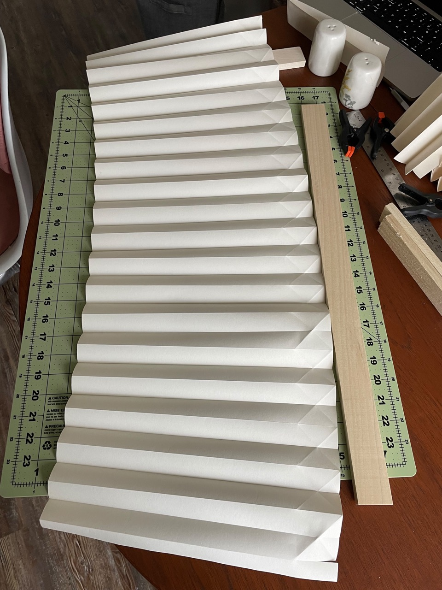

IKEA Paper Shade Lamp
Friday 13, May 2022

I found this lamp for $4 at a thrift store. It’s vintage IKEA. Sadly it came without a shade, so I folded the pictured one from a roll of craft paper also from IKEA.
How to Build¶
To construct, start with a piece of paper at least 40"x13".
Using the blunt side of butter knife or some other tool, score lines every 1" across the short side of the paper.
Accordion fold along the scored lines.
Score the diagonals following this template (not to scale)
 The “zig-zag” in the middle should have it’s lowest point around 2 inches from the bottom of the shade

Fold to shape, the parallel lines folded in the first step will switch direction at every zig-zag intersection
Thread the top together with a needle and yarn.
Glue the two ends together then tighten the yarn to finish the shade.